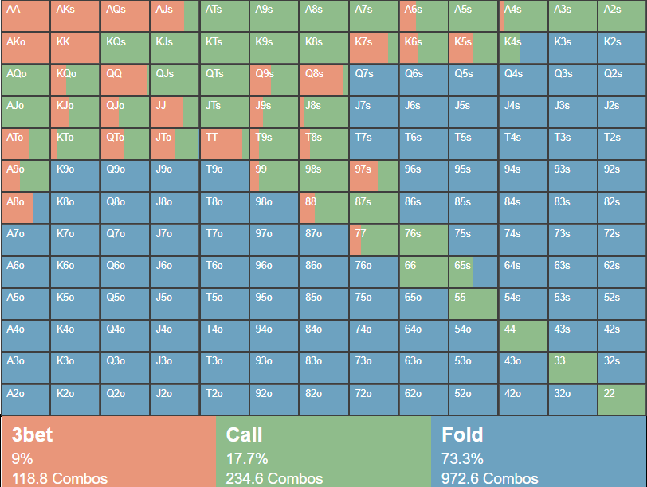

Winning Strategies
Texas Hold'em is not just about luck—it's about strategy. Understanding probabilities, reading opponents, and knowing when to fold are all key to success. Whether you're playing for fun or in high-stakes tournaments, mastering these principles will give you a significant edge over your competition.
The key to success in Texas Hold'em lies in a combination of skill, patience, and psychological prowess. A good player knows when to play aggressively and when to fold, understands the mathematical probabilities of drawing the right card, and can read an opponent’s tendencies and betting behavior. Every action at the table is an opportunity to gather information, and smart players use this data to make calculated decisions.
Position is another crucial factor in Texas Hold'em. Players who act later in a betting round have an advantage because they get to see what others do before making their own move. This allows for more strategic bluffing, controlled aggression, and better decision-making based on the strength of your hand versus the potential hands of others.
Here are some essential tips for improving your game:
- Start with strong hands—don't play every card you're dealt.
- Observe your opponents and recognize their playing styles.
- Master bluffing, but don’t overuse it.
- Manage your bankroll wisely to stay in the game longer.
- Use your position at the table to maximize your strategic advantage.
- Understand pot odds and implied odds to make the right calls.
- Stay patient—sometimes the best move is to fold and wait for a better hand.
Mastering Texas Hold'em takes time, but by consistently applying strategic principles and remaining disciplined in your gameplay, you can dramatically improve your chances of success. Whether you're aiming to dominate friendly poker nights or take on serious competition, a strong grasp of these strategies will elevate your game.
